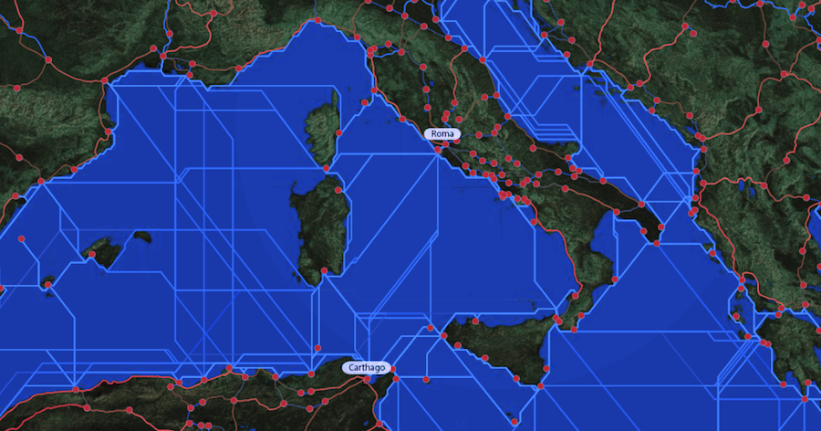

Date/Time: Monday, 4 November 2013 - 12:00pm to Tuesday, 5 November 2013 - 5:00pmLocation: CESTA, 4th Floor of Wallenberg Hall, Stanford UniversityEvent Link: Hestia2@Stanford Registration
Center for Spatial and Textual Analysis, Stanford University
450 Serra Mall, Building 160, Rm 433A (Fourth Floor)
November 4, 12:00-5:00 p.m and November 5, 9:00-5:00 p.m.
A free 1.5 day symposium on conceptualizing, visualizing and analyzing complex networks from different disciplinary perspectives.
This symposium will be a forum for new research in network analysis ranging from tracking emerging tech trends at Quid to dramatic networks within plays from ancient Greece and Rome, Renaissance England and France, 18th-century Germany, and 19th-century Norway. We will also showcase three exciting new developments in humanities research: Orbis 2.0, the next iteration of the Stanford Geospatial Network Model of the Roman World; Palladio, a graphical interface for expert exploration and analysis of historical data; and Topotime, a software development project aimed at expanding current options for representation of historical events and periods.
PROGRAM
November 4, 12:00 p.m. - 5:00 p.m
Augmenting intelligence using text analytics, network theory, and visualization software
Emmanuel R. Yera, PhD, Data Scientist, Quid
Making sense of publicly available information (e.g. news articles, patent fillings, and tweets) is extremely valuable but difficult to achieve due to its unstructured nature, magnitude, and our ability to absorb complex data. Using text analytics and mathematical formulations of text allows us to quickly and effectively find relationships between documents. Projecting these high dimensional relationships onto networks and leveraging network theory and algorithms allows us to more easily understand these complex relationships.
Orbis 2.0
Walter Scheidel and Elijah Meeks
ORBIS 2.0 is a complete rewrite of the interactive components of ORBIS: The Stanford Geospatial Transportation Network Model of the Roman World. Major changes are implemented in the core technologies, functionality, design and display. ORBIS 2.0 allows for new aggregated functionality to discover regions based on cartogram calculations and discovery high traffic sites (utilizing a simple form of the betweenness centrality network statistic) based on routes run by the user. The most ambitious aspect of ORBIS 2.0 from a UX perspective is the planned-for capacity to save calculations for citation and reuse.
ARCHES
Dennis Wuthrich
Arches is a new open-source geospatial software system for cultural heritage inventory and management, developed jointly by the Getty Conservation Institute and World Monuments Fund. Arches grew out of the collaborative effort to create the Middle Eastern Geodatabase for Antiquities and the widespread need within the heritage field for low-cost electronic inventories that are easy to use and access. Arches combines state-of-the-art software development with the insights and perspective of heritage professionals from around the world.
Tuesday, November 5, 2012, 9:00 a.m. - 5:00 p.m.
Palladio
Nicole Coleman and Giorgio Caviglia
“Networks in History” an NEH funded project on interface design for data-driven humanities research. The first phase of this effort, which we have name “Palladio” will be released in beta version at this Hestia2 workshop. The interface design emphasizes the contextualization of data: spatial, temporal, and relational to support interpretation when we lack the metrics for useful quantitative approaches. Workshop participants will
Network Theory and Dramatic Structure
Franco Moretti, Mark Algee-Hewitt and Ryan Heuser
This project compares the dramatic networks emerging from over 300 plays from ancient Greece and Rome, Renaissance England and France, 18th-century Germany, and 19th-century Norway. We are mostly interested in identifying the general properties of dramatic networks – their breadth, density, patterns of growth – and how they change according to genre [tragedy, comedy, historical play] and historical setting [ancient city state and empire, Renaissance court, modern nation-state]. Our latest research in this project, relating to patterns of growth leading to symmetrical and asymmetrical networks, will be presented for discussion.
(A geography of digestion lunchtime talk) Theorizing Material Relatedness in Networks: Two Geographical Case Studies
Nick Bauch
To imagine a network is to imagine what it means for two or more objects to be related. The two case studies presented - a geography of digestion and a geography of medical body sensors - offer ways to conceive of relatedness in the material relationship among bodies and landscapes.
A Tour of Network Maps
G. Salim Mohammed (Stanford Digital and Rare Maps Librarian)
Topotime
Karl Grossner and Elijah Meeks
Topotime (“topological time”) is a software development project aimed at expanding current options for representation of historical events and periods—formally, for computational reasoning, and graphically in timelines. The Topotime data model and graphical layout will accommodate several types of temporal references commonly encountered in humanities scholarship, including fuzzy temporal bounds and cyclical time. TopoTime development has been initiated by Elijah Meeks and Karl Grossner (Stanford University Libraries) and will become an open-source effort by year-end.
